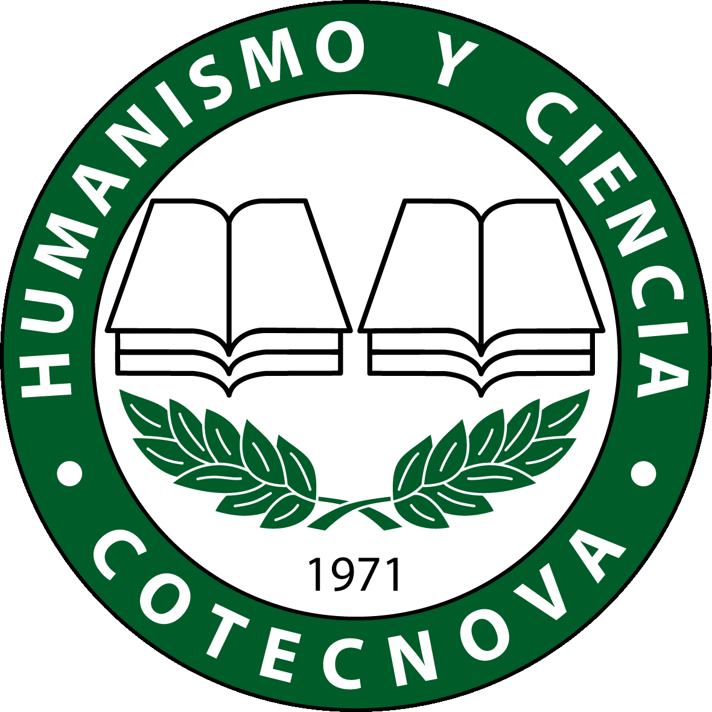
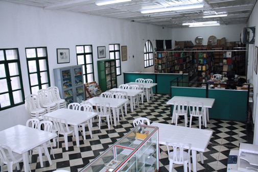

Conviértete en un profesional del desarrollo de aplicaciones utilizando las últimas herramientas de desarrollo y tendencias asociadas a ésta práctica, podrás ser capaz de entender el entorno y el funcionamiento de los sistemas de información como nunca lo habías visto antes. ANÍMATE.
Conviértete en un profesional del desarrollo de aplicaciones utilizando las últimas herramientas de desarrollo y tendencias asociadas a ésta práctica, podrás ser capaz de entender el entorno y el funcionamiento de los sistemas de información como nunca lo habías visto antes. ANÍMATE.
Conviértete en un profesional del desarrollo de aplicaciones utilizando las últimas herramientas de desarrollo y tendencias asociadas a ésta práctica, podrás ser capaz de entender el entorno y el funcionamiento de los sistemas de información como nunca lo habías visto antes. ANÍMATE.
Somos una Institución de Educación Superior, sin ánimo de lucro, facultada para ofrecer programas de formación hasta el nivel profesional, por ciclos propedéuticos, generando competencias, difundiendo conocimientos con fundamentación científica e investigativa, para formar profesionales desde una perspectiva integral que permita el fortalecimiento y desarrollo socioeconómico en la construcción de una sociedad nueva.
La biblioteca Digital de la Corporación de Estudios Tecnológicos del Norte del Valle es un proyecto institucional Online que pretende poner a disposición de la comunidad estudiantil, de la ciudad y de la región la recopilación de material bibliográfico digital generado, recopilado y referenciado por los docentes y estudiantes, además de otros obtenidos de fuentes digitales a través de Internet, el propósito de este es servir como medio de consulta y direccionamiento a contenidos relacionados con áreas de formación , contribuyendo a enriquecer la formación educativa de los estudiantes y de los diferentes centros educativos de la ciudad y la región; sin desconocer la autoría y propiedad intelectual de dicho material.
La Corporación de Estudios Tecnológicos del Norte del Valle, antes Centro Universitario del Norte del Valle, nació gracias al empeño de insignes representantes cívicos cartagüeños, entre quienes es meritorio destacar al desaparecido Don Jesús Ernesto Aulestia, al Doctor Alfonso Delgado Arango y el excelentísimo Monseñor José Gabriel Calderón; unidos bajo un ideal común cual era el de ampliar las posibilidades de desarrollo social, técnico, moral y cultural de la comunidad estudiantil de la ciudad como centro intelectual, de todo un radio de acción en una zona de influencia como lo son el sur – occidente Quindiano, Risaralda, Chocó y lógicamente del Norte del Valle.
Es así, como este anhelo se cristaliza cuando se le da la configuración legal al entonces llamado Centro de Estudios Superiores o Centro Universitario del Norte del Valle, con la Resolución No. 3712 del veintiuno (21) de septiembre de mil novecientos setenta y uno (1971) emanada de la Gobernación del Valle, y mediante el Acuerdo No. 45 del diez (10) de julio de mil novecientos setenta y cinco (1975), se obtiene la Licencia de funcionamiento proferida por el ICFES, para los programas de Tecnología en Contabilidad y Tecnología en Administración de Empresas. Igualmente por virtud del Acuerdo No. 251 del veinticuatro (24) de octubre del mismo año se concedió licencia de funcionamiento al programa de Tecnología en Administración Agropecuaria.
Posteriormente se incorpora la Tecnología en Sistematización de Datos, otorgándosele Licencia de Funcionamiento el día treinta (30) de diciembre de mil novecientos noventa y uno (1991). La Ley 30 de 1992, autoriza a las Instituciones de Educación Superior para aprobar, prorrogar o abrir nuevos programas académicos. Con base en esta Ley el Consejo Directivo de la Institución da aprobación a esta Tecnología mediante el Acuerdo No. 014 del veintisiete (27) de septiembre de mil novecientos noventa y cuatro (1994).
En el año de mil novecientos setenta y siete (1977) por Resolución No. 3955 del Ministerio de Educación del seis (6) de mayo y por el Acuerdo No. 225 del trece (13) de diciembre de mil novecientos setenta y seis (1976) emanada de la Junta Directiva del ICFES, se obtuvo la aprobación de los programas Tecnológicos de Contabilidad y Administración Agropecuaria respectivamente. En 1977 se acuerda suspender la Tecnología en Administración de Empresas. En el año de mil novecientos ochenta y siete (1987) se da inicio al proyecto de incorporar la Tecnología en Café y Diversificación en la modalidad a distancia, a dicho proyecto el ICFES, le otorga la licencia de funcionamiento en mil novecientos ochenta y nueve (1989), mediante Resolución No. 016 del veintiséis (26) de enero; finalmente es aprobada el treinta (30) de julio de mil novecientos noventa y uno (1991) con la Resolución No. 2047.
En el año de 1995 y siguiendo los lineamientos de la Ley 30 de 1992, el Consejo Directivo aprueba la creación de las Tecnologías en: Recursos Naturales y del Ambiente y Producción Agropecuaria, Administración Comercial y Financiera, Administración de Empresas, Mercadeo y Ventas y procede a notificarlos al ICFES. Durante el año 2003, se trabajó en la conformación del Centro de Educación no Formal, con el objetivo de ofrecer programas técnicos. Éste es aprobado por la Secretaría de Educación Municipal, con la Resolución 012 del 30 de enero de 2004.
A raíz del proceso de crecimiento y desarrollo que pretende alcanzar la Corporación, se han establecido convenios de cooperación interinstitucional con otras universidades, con el fin de planear y ejecutar acciones de carácter investigativo, académico, de extensión y cultura que redunden en beneficio de la población. En la actualidad, la Corporación de Estudios Tecnológicos cuenta con programas descentralizados en otros municipios del Norte del Valle, mediante los cuales ha logrado un acercamiento con la comunidad, satisfaciendo sus necesidades de capacitación. Igualmente, se ha redefinido en marco de la Ley 749 de 2002, para ofrecer sus programas académicos por ciclos propedéuticos.
Se podría decir que esta Institución es de carácter cívico por cuanto no recibe ningún aporte de entidades estatales ni privadas y sus socios son ilustres ciudadanos Cartagüeños, que no generan gastos económicos a la Institución, pero tampoco reciben beneficios.
Fuente: Tomado del Plan de Desarrollo Institucional.